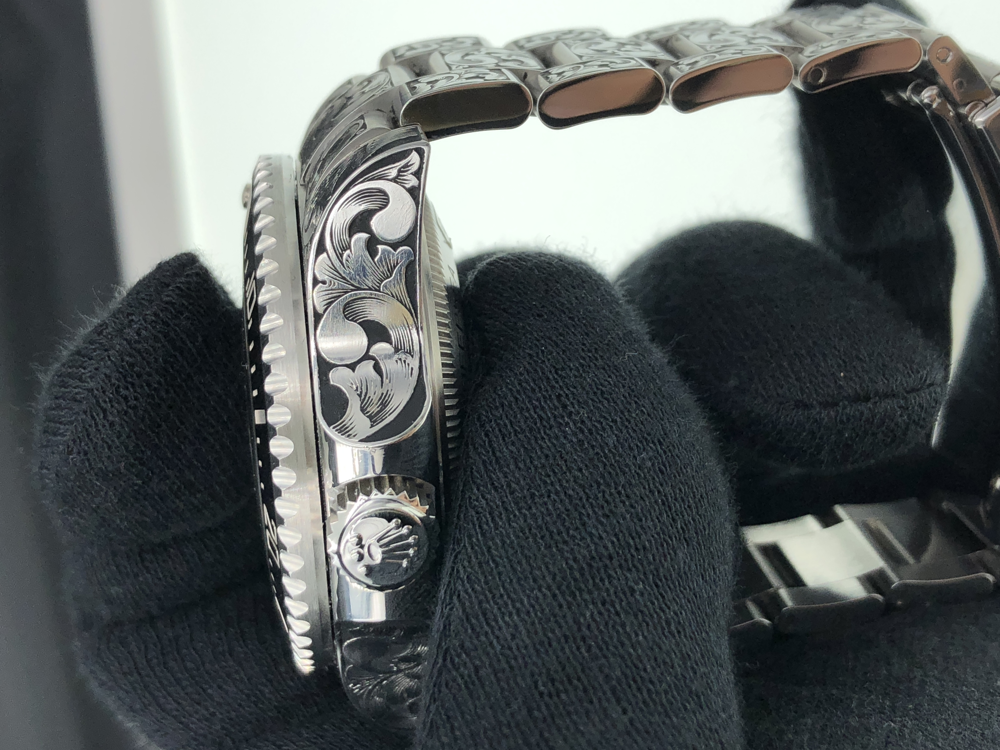
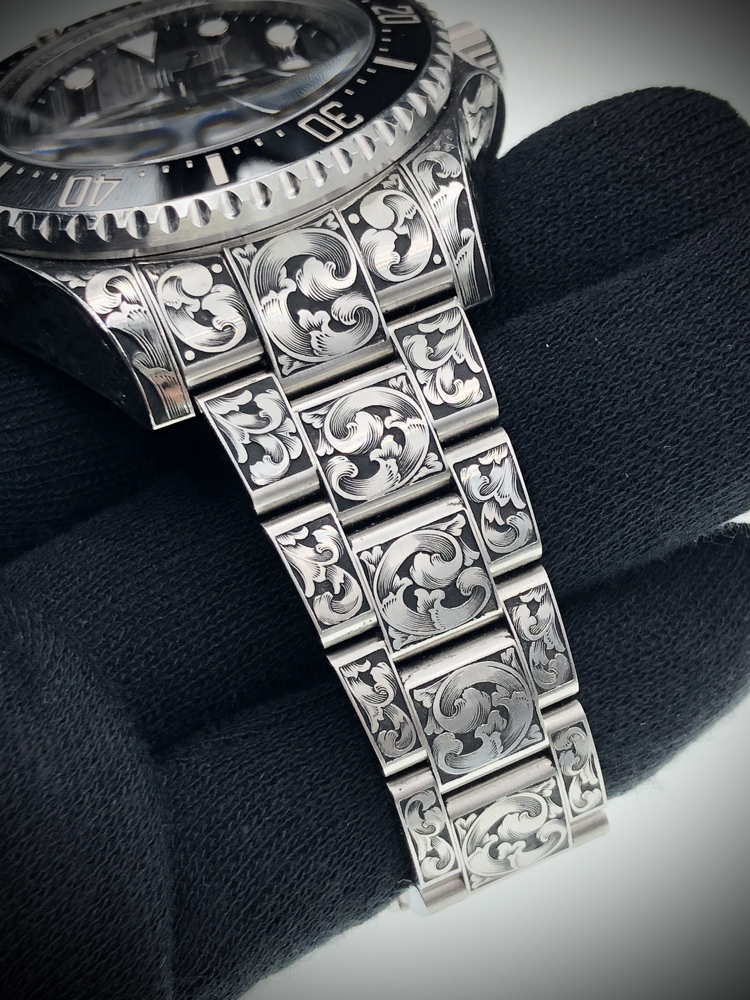
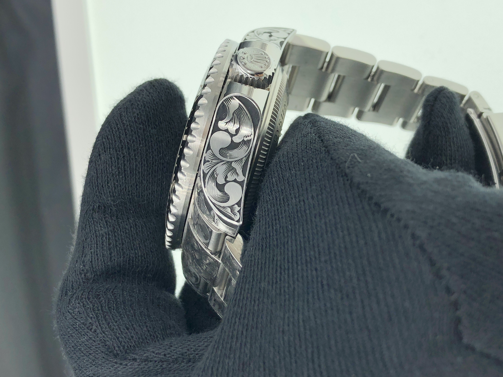
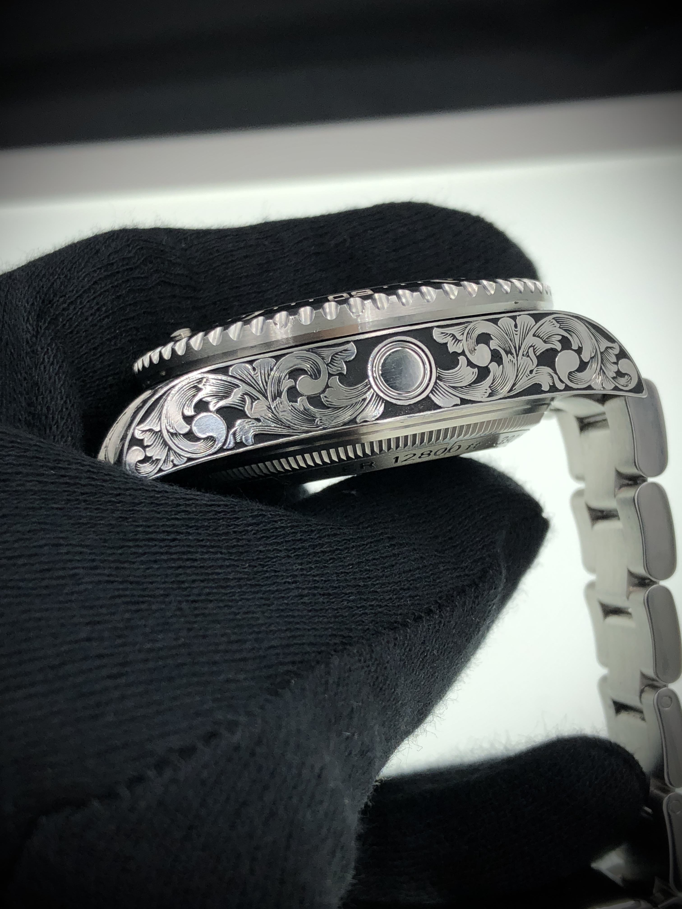
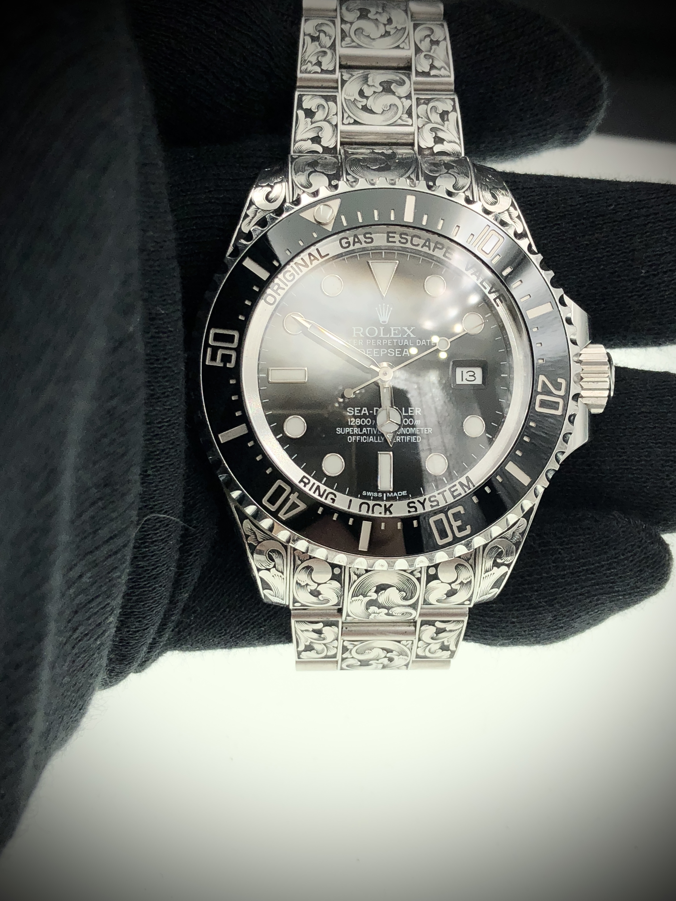
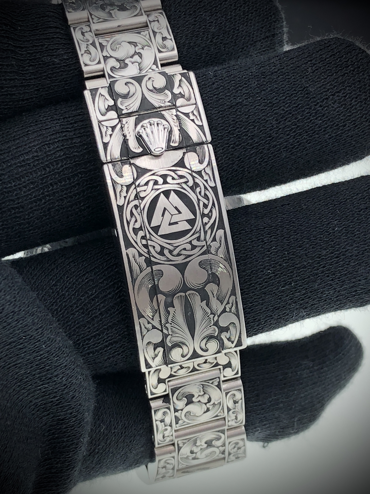

Selected work · 06
Rolex Sea-Dweller

The project
Flowing ornament across a professional diving watch.
Bold floral scrollwork travels from the case and lugs across the bracelet, using darkened backgrounds and bright hand-cut surfaces to create depth. A geometric emblem is integrated into the clasp as a personal focal point within the continuous composition.





Details
- Watch
- Rolex Sea-Dweller
- Technique
- Traditional hand engraving
- Composition
- Floral scrollwork and a geometric clasp emblem
- Studio
- Mr. Nine Engraving · Taiwan